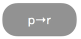
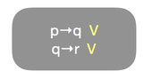
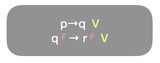
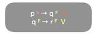
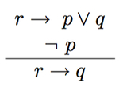
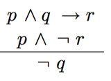
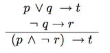
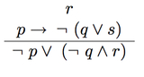
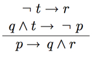
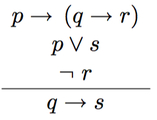

Matemática Discreta
Nessa seção voce irá aprender sobre Lógica Formal e Grafos
Lógica Formal Parte VI
Método de Refutação
1. REDUÇÃO AO ABSURDO
Método de Refutação é baseado em uma técnica de prova, chamada de prova por redução ao absurdo, que consiste no seguinte procedimento:
- Admite-se inicialmente que as premissas são verdadeiras e a conclusão é falsa em alguma atribuição de valores de verdade para as letras sentenciais;
- O argumento será válido se, em qualquer tentativa de explicitar essa tal atribuição um absurdo for gerado, isto é, se uma mesma sentença assumir tanto valor V como valor F;
Vejamos o exemplo a seguir:
- Quando Diego completar 18 anos, ele terá que se alistar nas forças armadas.
- Se Diego se alistar nas forças armadas, ele terá de mudar de cidade.
- Logo, Diego completa 18 anos somente se mudar de cidade.
- Se Diego completar 18 anos, então Diego deverá mudar de cidade.
- p : Diego completa 18 anos.
- q : Diego terá que se alistar nas forças armadas.
- r : Diego deverá mudar de cidade
A conclusão pode ser reescrita da seguinte forma:
Então temos as seguintes sentenças atômicas:
Ao representarmos de forma simbólica, os argumentos ficam assim:
- Premissas:
- Conclusão: 
- Premissas:
- Conclusão:
- Premissas: 
- Conclusão:
- Premissas: 
- Conclusão:
- Premissas: 
- Conclusão:

Então, primeiramente devemos assumir que as premissas são todas verdadeiras e a conclusão é falsa.

Então, agora devemos analisar cada uma das sentenças atômicas. Assim, para que a conclusão seja FALSA (F), é necessário que p seja VERDADEIRO (V) e q seja FALSO (F), seguindo as regras da tabela verdade dos conectivos lógicos de implicação, V → F = F:
Assumindo-se que r é FALSO (F), então na proposição q → r é necessário que q também seja FALSO (F), pois é a única forma para a proposição q → r resultar em VERDADEIRO (V), seguindo as regras da tabela verdade dos conectivos lógicos de implicação, F → F = V:
Assumindo-se que q é FALSO (F), então na proposição p → q é necessário que p também seja FALSO (F), pois é a única forma para a proposição p → q resultar em VERDADEIRO (V), seguindo as regras da tabela verdade dos conectivos lógicos de implicação, F → F = V, então é exatamente aí que encontramos nossa prova por redução ao absurdo, pois a implicação p → q na verdade resulta em FALSO (F), V → F = F:
Devemos nos recordar do princípio da não contradição:
“Princípio na Não-contradição uma sentença não pode ser verdadeira e falsa em uma mesma atribuição de valores para as letras sentenciais”
Não podendo existir uma atribuição de valores para as letras sentenciais na qual as premissas são verdadeiras e a conclusão é falsa. Portanto, o argumento é válido.
Exercícios
Agora teste o seu grau de aproveitamento do conteúdo resolvendo os exercícios a seguir
REFUTAÇÃO POR REDUCÃO AO ABSURDO
Determine se as seguintes formas de argumentos são válidas ou inválidas utilizando o método de refutação por redução ao absurdo:
- a) 
- b) 
- c) 
- d) 
- e) 
- f) 
Gabarito
Confira suas respostas
- a) Válido, pois ocorreu um absurdo.
- b) Válido, pois ocorreu um absurdo.
- c) Válido, pois ocorreu um absurdo.
- d) Válido, pois ocorreu um absurdo.
- e) Inválido, pois não ocorreu um absurdo.
- f) Válido, pois ocorreu um absurdo.